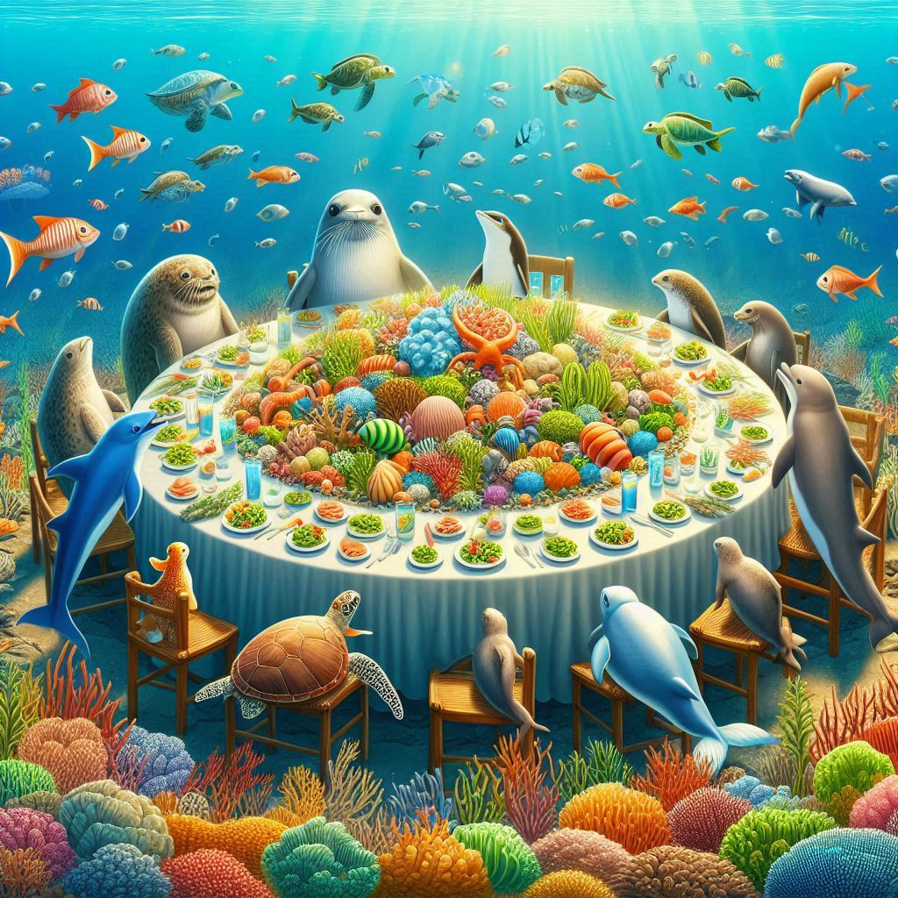
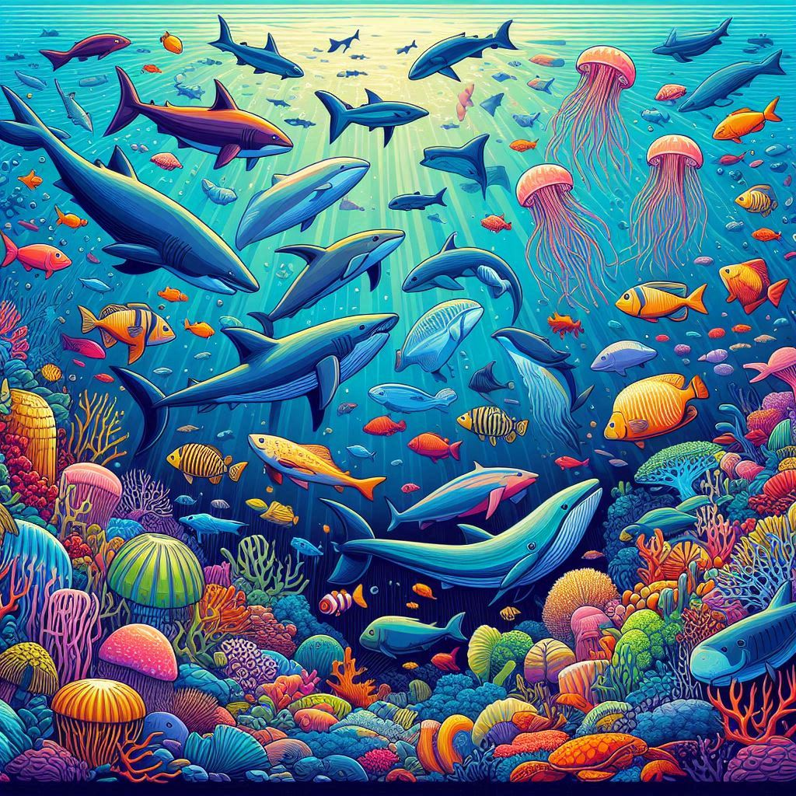
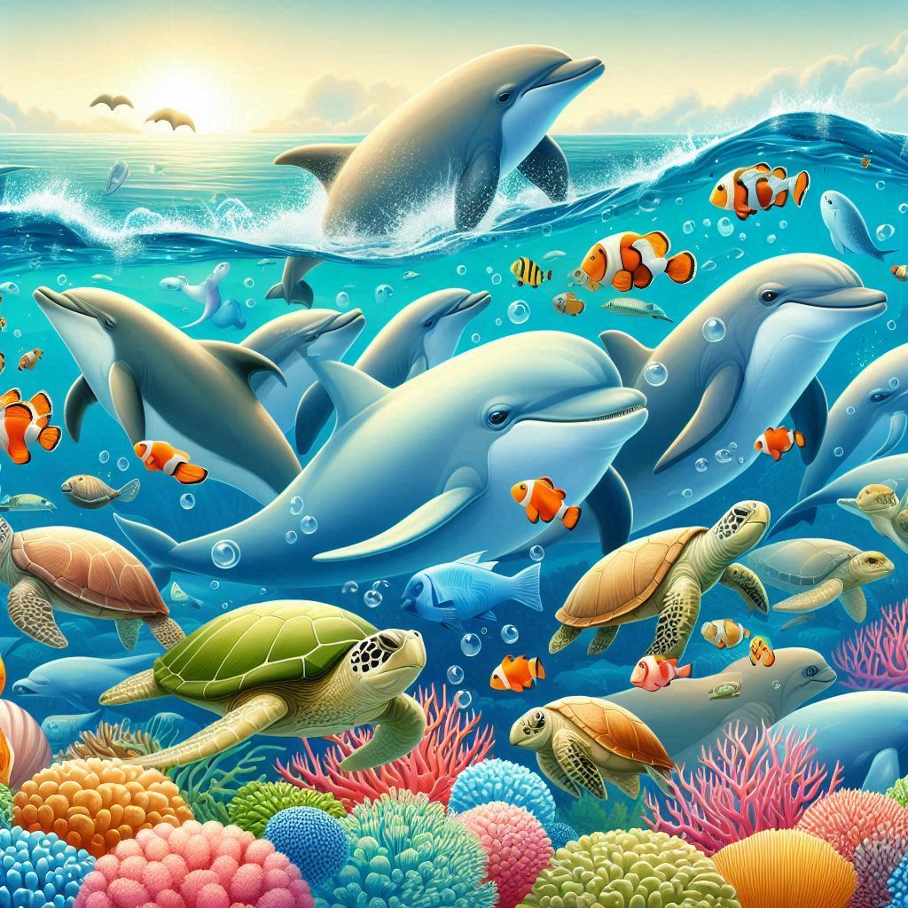
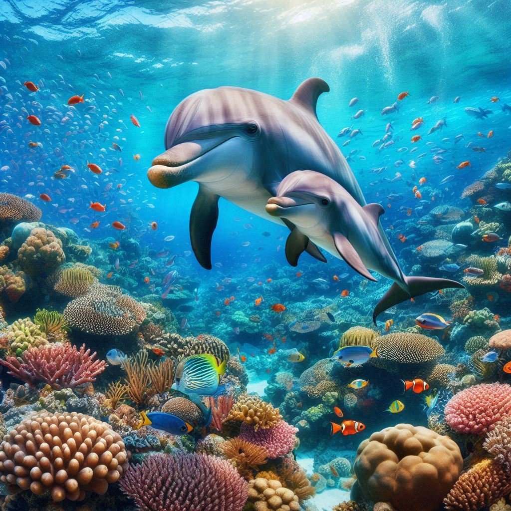
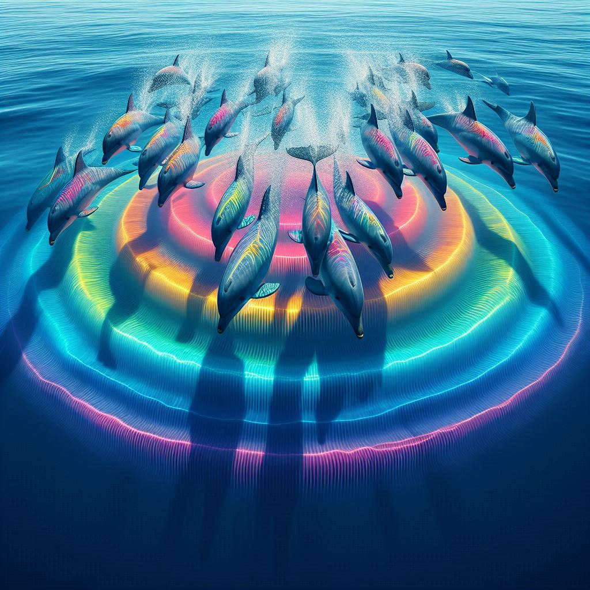

DEFINICIONES ACERCA DE NUETROS ANIMALES MARINOS
En esta seccion hablaremos de algunos conceptos y sus definiciones que tienen relacion con los animales marinos.
Estos conceptos nos ayudaran a entender algunas palabras que encontran en nustro apartado de "DESCRIPCCIONES" y que pueden ser desconocidas o confusas para algunas personas, este "glosario" es para ayudarlos a comprender mejor sobre nuestros animalitos.
La primera palabra de la cual hablaremos es "Dieta".
✿Dieta✿
Este concepto se refiere al conjunto de alimentos que consume un animal de manera habitual para obtener los nutrientes necesarios para su supervivencia, crecimiento, y reproducción. La dieta de los animales puede variar ampliamente dependiendo de la especie, el hábitat, la disponibilidad de alimentos y las adaptaciones evolutivas. La dieta de un animal está adaptada a sus necesidades nutricionales específicas y a su entorno, y puede incluir una variedad de estrategias de alimentación y tipos de alimentos.

✿Distribución✿
Este concepto se refiere a la forma en que las diferentes especies de animales marinos están dispersas o ubicadas en el océano y otros cuerpos de agua salada. La distribución de los animales marinos puede estar influenciada por varios factores, incluyendo la temperatura del agua, la salinidad, la disponibilidad de alimento, la presencia de depredadores y competidores, las corrientes oceánicas y la profundidad del agua.

✿Estado de conservación✿
Este concepto se refiere a la condición actual de una especie en términos de su riesgo de extinción. La evaluación de los animales marinos se basa en criterios como su población, tendencias de población, distribución geográfica, tamaño de hábitat, y las amenazas que enfrentan, tales como la pesca excesiva, la contaminación, el cambio climático, la destrucción de hábitats y otros impactos antropogénicos. El estado de conservación es fundamental para guiar los esfuerzos de conservación y proteger la biodiversidad.

✿Manada✿
El término "manada" se usa para describir ciertos grupos de mamíferos marinos o de otras especies que se desplazan y viven juntos.

✿Cria✿
La palabra "cría" puede referirse a las crías de los animales, es decir, a las crías recién nacidas o jóvenes. Por ejemplo, una cría de león es un leoncito, una cría de perro es un cachorro, etc.

✿Ecolocalización✿
La ecolocalización es un mecanismo biológico utilizado por algunos animales, como murciélagos, delfines y algunos tipos de aves, para orientarse y detectar objetos en su entorno. Este proceso implica la emisión de sonidos que luego rebotan en los objetos cercanos y regresan como ecos al animal. Analizando estos ecos, el animal puede determinar la distancia, tamaño, forma y ubicación de los objetos, lo que les permite moverse y cazar con precisión, incluso en completa oscuridad o bajo el agua.
